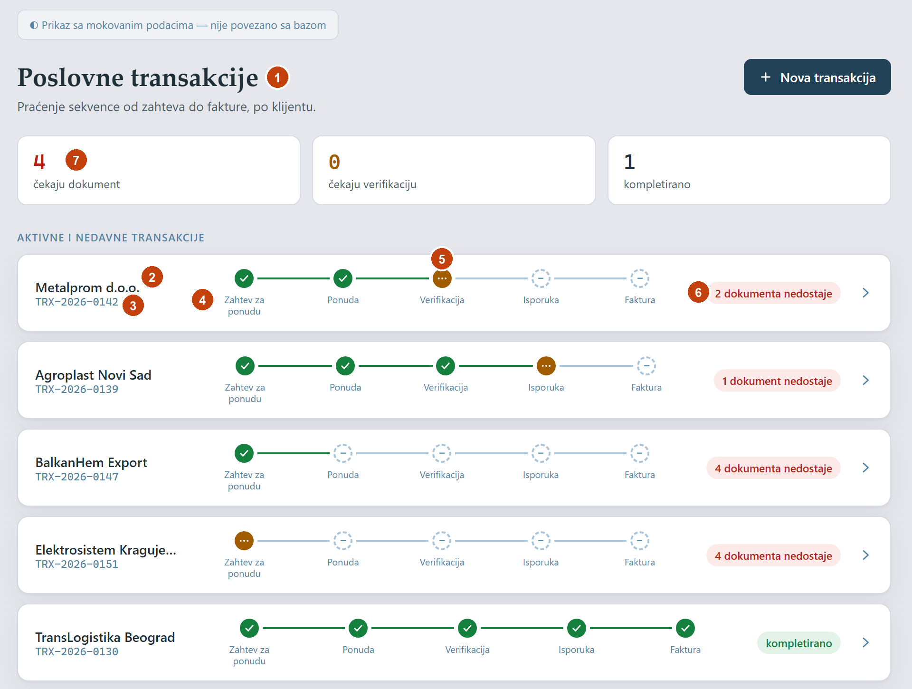
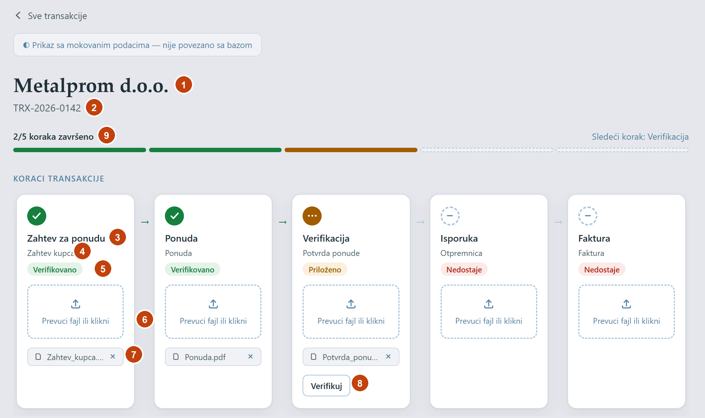
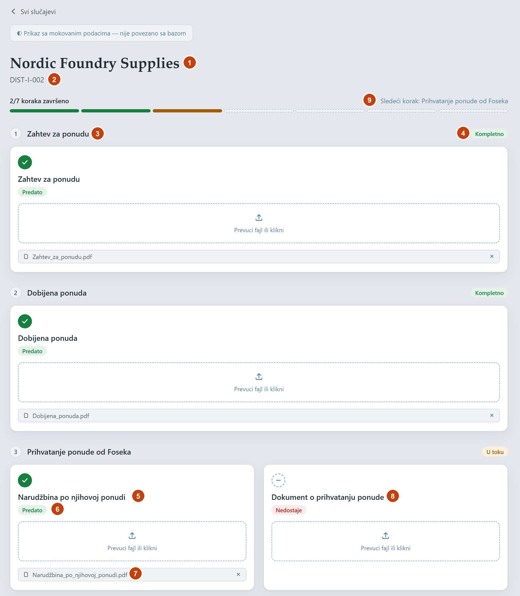
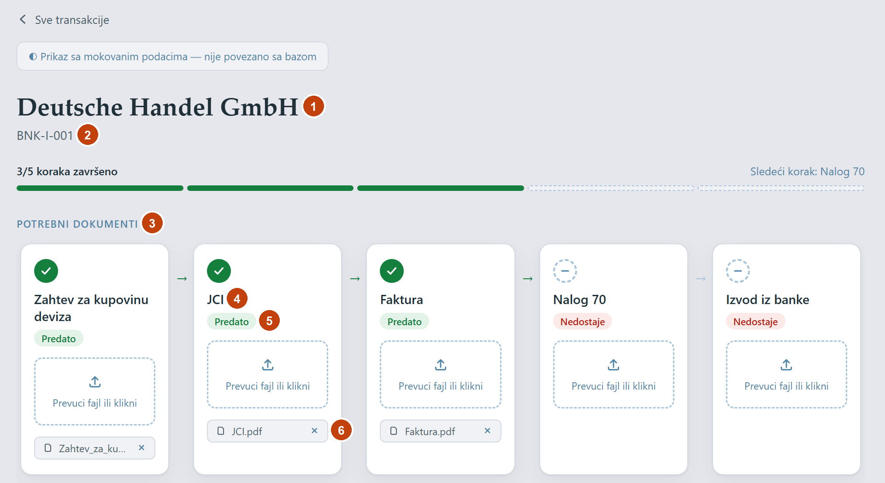
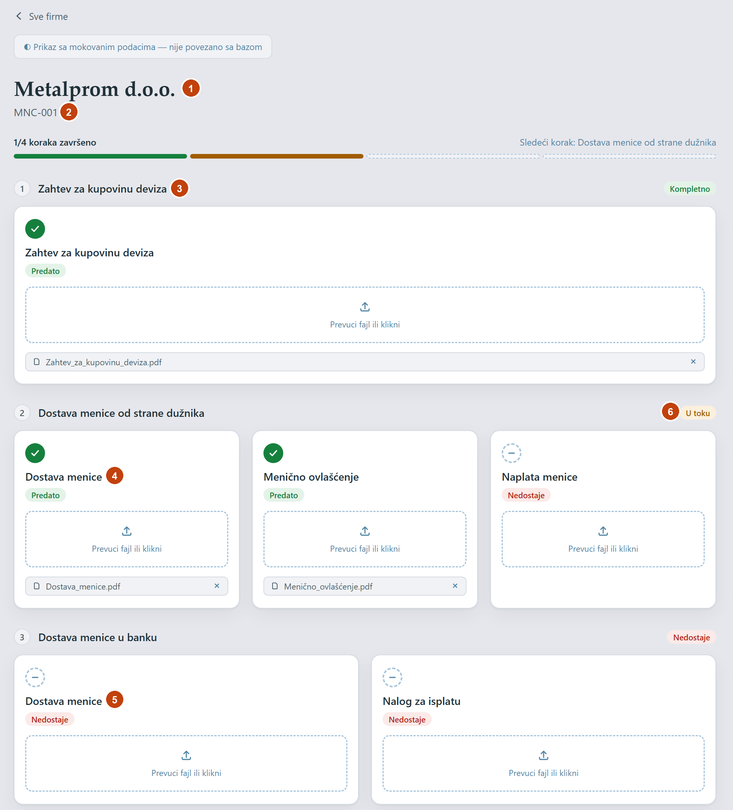
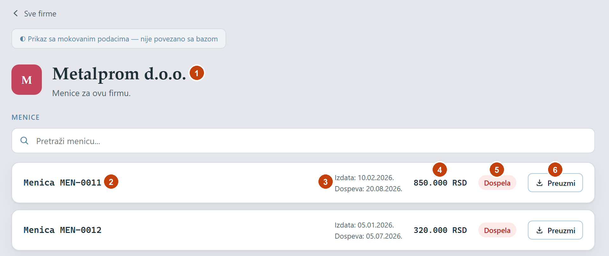
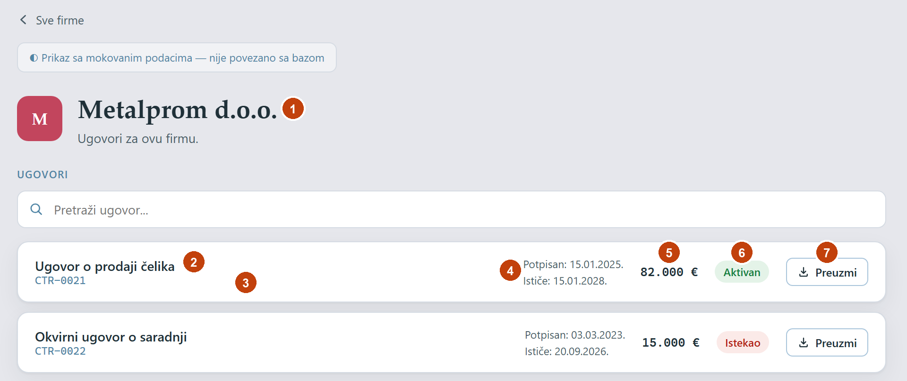
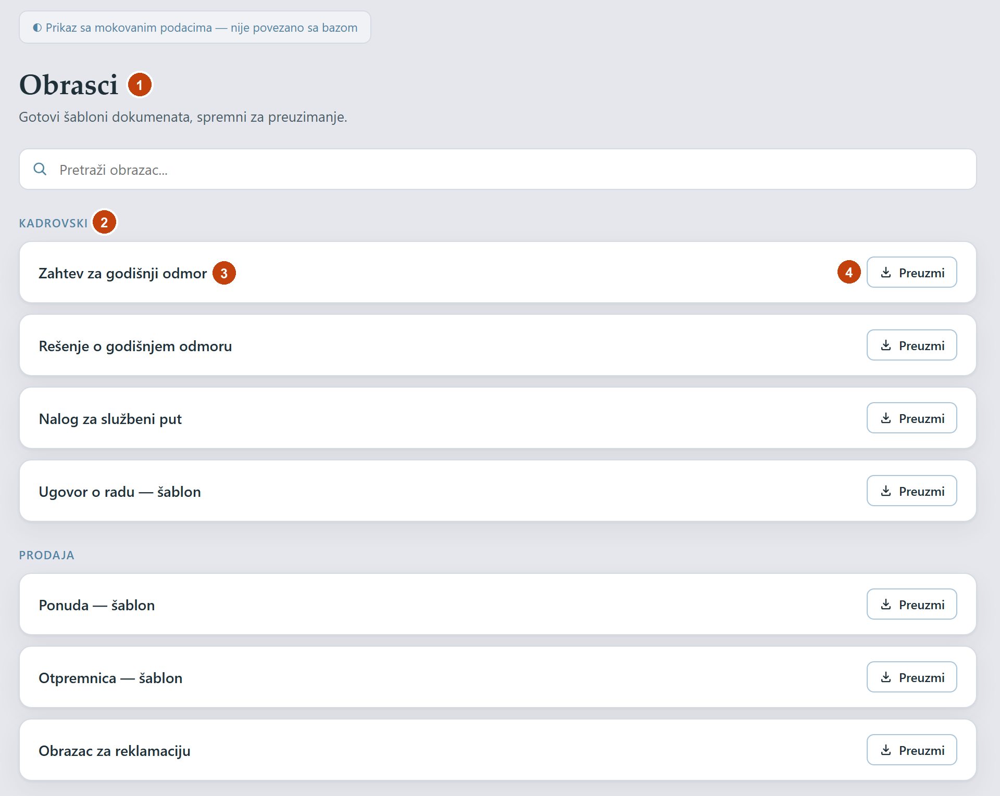

DMS model baze
Predlog šeme za bazu klijenta (šema dms), napravljen na osnovu svih modula na frontendu i postojećeg backend-a. Cilj je da jedan model pokrije Poslovne transakcije, Banku, Menice i Distribuciju Foseko, a da Ugovori, Obrasci i registar menica imaju svoje tabele.
Polazna tačka: tri oblika toka na frontendu
Mock podaci koriste tri različita načina praćenja dokumenata. Model ih svodi na jedan: proces ima korake, a korak može (ali ne mora) imati imenovane dokumente koje traži.
Korak = jedan očekivani dokument
5 koraka (Zahtev za ponudu → Faktura), status se čuva, „Verifikuj“ je ručna akcija.
Korak = više imenovanih dokumenata
Npr. „Isporuka“ (inostrani) traži JCI, Potvrdu o kvalitetu, Račun, CMR i Izjavu o poreklu. Status koraka se računa.
Ravna lista dokumenata
JCI, Faktura, Nalog 70, Izvod iz banke (+ Zahtev za kupovinu deviza za inostrano). U modelu: proces sa jednim korakom.
Principi modela
- Šablon i instanca su odvojeni. Ti definišeš tip procesa, korake i tražene dokumente. Pri kreiranju procesa prave se njegovi koraci. Korisnik ne pravi šablone.
- U bazi se čuvaju samo ljudske odluke.
is_verifiediis_completedse čuvaju. „Nedostaje / delimično / priloženo“, „ističe uskoro“ i „dospela“ se računaju iz dokumenata i datuma. Zato status ne može da se razilazi sa stvarnim stanjem. - Ko i kada piše samo u audit logu. Tabele nemaju kolone
created_byniverified_at. - Firma je jedna tabela. Danas svaki modul ima svoju kopiju liste firmi sa imenom kao tekstom. U modelu svi pokazuju na
companies. - Fajl je uvek red u
documents, bez obzira da li pripada koraku, ugovoru, menici, obrascu ili samo arhivi. Upload, download, raspored foldera i audit rade isto za sve. - Ništa se fizički ne briše. Soft delete preko
is_deleted, koji već postoji u baznoj klasiEntity.
Dijagram veza
Gornji deo su šabloni, srednji instance procesa, desno registri. Sve tabele nasleđuju id, dms_id, is_deleted i last_update_time.
erDiagram
process_types ||--o{ step_definitions : "ima korake"
step_definitions ||--o{ document_requirements : "traži dokumente"
process_types ||--o{ processes : "šablon za"
companies ||--o{ processes : "klijent"
processes ||--o{ processes : "nadređeni proces"
processes ||--o{ steps : "ima"
step_definitions ||--o{ steps : "definiše"
steps ||--o{ documents : "prilozi"
document_requirements ||--o{ documents : "ispunjava"
companies ||--o{ contracts : "ugovorna strana"
companies ||--o{ bills : "dužnik"
bills |o--o| processes : "tok menice"
contracts }o--o| steps : "ispunjava korak"
contracts ||--o{ documents : "fajl ugovora"
bills ||--o{ documents : "fajl menice"
form_templates ||--o{ documents : "fajl šablona"
processes ||--o{ audit_logs : "istorija"
Tabela code_sequences nije prikazana. Ona samo deli redne brojeve za šifre.
Tabele
Oznake: novo tabela ne postoji u kodu, izmena postoji i menja se, ostaje postoji i ostaje kakva jeste.
companies
novoFirme sa kojima klijent posluje (kupci, dobavljači, dužnici)| Kolona | Tip | Opis |
|---|---|---|
| name | varchar(200) | „Metalprom d.o.o.“ |
| tax_id | varchar(20) null | PIB (domaći) ili VAT broj (strani). Jedinstven kad je popunjen. |
| registration_number | varchar(20) null | Matični broj |
| country_code | char(2) | RS, DE, AT… Domaća firma = RS. |
| address | varchar(300) null |
Inicijali i boja logoa ostaju računati na frontendu (companyInitials, companyColor), pa ne treba kolona. Za URL se umesto slug-a (metalprom) koristi dms_id.
process_types
izmenaŠablon procesa, npr. „Distribucija Foseko: inostrani kupac“| Kolona | Tip | Opis |
|---|---|---|
| name | varchar(100) | Postoji |
| module | enum ProcessModule | Novo. BusinessTransaction, Import, Distribution, Export, Bank, BillOfExchange. Određuje u kom meniju se proces vidi. |
| code_prefix | varchar(10) | Novo. TRX, DIST-D, DIST-I, BNK, BNK-I, MNC |
| is_active | bool | Novo. Stari šablon se isključuje umesto da se briše, pa postojeći procesi ostaju ispravni. |
Domaća i inostrana varijanta su dva tipa u istom modulu, jer imaju različite korake (Distribucija) ili dokumente (Banka).
step_definitions
ostajeKoraci šablona| Kolona | Tip | Opis |
|---|---|---|
| process_type_id | FK | |
| name | varchar(100) | „Prihvatanje ponude od Foseka“ |
| description | varchar(1000) null | Uputstvo korisniku: šta ide u korak i zašto |
| step_order | int | Jedinstven unutar tipa procesa |
document_requirements
novoImenovani dokumenti koje korak traži| Kolona | Tip | Opis |
|---|---|---|
| step_definition_id | FK | |
| name | varchar(150) | „CMR“, „Menično ovlašćenje“, „Nalog 70“ |
| sort_order | int | Redosled prikaza u koraku |
| is_required | bool | Ako je false, korak može da se verifikuje i bez njega |
Korak bez ijednog zahteva radi kao slobodan upload uz opis, kako smo se ranije dogovorile. Ime „Dostava menice“ postoji u dva koraka menice, ali su to dva različita reda, pa nema zabune.
processes
izmenaJedna transakcija, slučaj distribucije, bankarsko plaćanje ili tok menice| Kolona | Tip | Opis |
|---|---|---|
| code | varchar(30) unique | TRX-2026-0142, generiše se iz code_sequences |
| process_type_id | FK | |
| company_id | FK | Zamenjuje tekstualnu kolonu client. |
| parent_process_id | FK null | Npr. Distribucija Foseko kao deo Uvoza |
| is_completed | bool | Završna potvrda; zaključava proces |
| sent_to_sef | bool | Novo. Dugme „Pošalji na sef“ kod domaćih slučajeva Distribucije (pitanje 3) |
steps
ostajeKoraci konkretnog procesa, prave se iz šablona pri kreiranju procesa| Kolona | Tip | Opis |
|---|---|---|
| process_id | FK | |
| step_definition_id | FK | Unique zajedno sa process_id |
| is_verified | bool | Poništava se na svaki dodat ili obrisan dokument |
documents
izmenaSvaki fajl u sistemu| Kolona | Tip | Opis |
|---|---|---|
| original_file_name | varchar(255) | Postoji |
| storage_key | varchar(500) unique | TRX-2026-0142_Metalprom/04_Isporuka/CMR__c91d.pdf |
| content_type | varchar(100) | Postoji |
| size_bytes | bigint | Postoji |
| step_id | FK null | Postoji |
| requirement_id | FK null | Novo. Koji traženi dokument fajl ispunjava. Prazno znači dodatni prilog u koraku. |
| contract_id | FK null | Novo. Fajl ugovora |
| bill_id | FK null | Novo. Sken menice |
| form_template_id | FK null | Novo. Fajl obrasca |
Check constraint: popunjen je najviše jedan vlasnik (korak, ugovor, menica ili obrazac). Bez vlasnika dokument je samostalan u Arhivi. requirement_id sme da postoji samo uz step_id.
contracts
novoModul Ugovori| Kolona | Tip | Opis |
|---|---|---|
| code | varchar(30) unique | CTR-0021 |
| company_id | FK | |
| title | varchar(200) | „Ugovor o prodaji čelika“ |
| signed_date | date | |
| expiry_date | date null | Prazno za ugovore na neodređeno |
| value | numeric(18,2) null | |
| currency | char(3) | EUR, RSD… (pitanje 7) |
| fulfills_step_id | FK null | Ugovor je ujedno ispunjenje koraka u nekom procesu (pitanje 6) |
bills
novoRegistar menica (iznos, rokovi)| Kolona | Tip | Opis |
|---|---|---|
| code | varchar(30) unique | MEN-0011 |
| company_id | FK | Dužnik |
| amount | numeric(18,2) | 850.000,00 |
| currency | char(3) | RSD |
| issue_date | date | |
| maturity_date | date | Iz ovoga se računa „aktivna / dospeva uskoro / dospela“ |
| process_id | FK null unique | Tok dokumenata te menice (MNC-…), ako je pokrenut (pitanje 4) |
form_templates
novoModul Obrasci| Kolona | Tip | Opis |
|---|---|---|
| code | varchar(30) unique | OBR-011 |
| name | varchar(200) | „Otpremnica — šablon“ |
| category | varchar(50) | Kadrovski, Prodaja, Opšte |
Sam fajl je red u documents sa form_template_id. Nova verzija obrasca znači novi dokument, a prikazuje se poslednji.
audit_logs
izmenaKo je šta uradio| Kolona | Tip | Opis |
|---|---|---|
| time | timestamptz | Postoji |
| user_id | uuid | dms_id korisnika iz shared baze, bez FK |
| action | enum AuditAction | Postojeće + ContractCreated, ContractUpdated, BillCreated, BillUpdated, SentToSef, ProcessCreated |
| process_id | FK null | Postaje nullable, jer se loguju i ugovori i menice |
| step_id, document_id | FK null | Postoje |
| contract_id, bill_id | FK null | Novo |
| description | varchar(500) null | Snimak u trenutku akcije, npr. ime fajla ili „iznos 850.000 → 900.000“ |
code_sequences
novoBrojač za šifre, bez rupa i duplikata| Kolona | Tip | Opis |
|---|---|---|
| prefix | varchar(10) | PK zajedno sa year |
| year | int | Za šifre bez godine stoji 0 |
| last_value | int | Uvećava se u istoj transakciji u kojoj se pravi zapis (UPDATE … RETURNING) |
Kako se računaju statusi
Ništa od ovoga nije kolona u bazi. Računa se u upitu, pa radi i za filtere.
Traženi dokument
requirement_id →PredatoKorak
| Status | Uslov | Sadašnja oznaka u UI |
|---|---|---|
| Prazan | nema nijednog fajla | Nedostaje |
| Delimično | ima fajlova, ali fali bar jedan obavezan traženi dokument | U toku |
| Priloženo | svi obavezni su predati (ili korak nema zahteva, a ima bar jedan fajl), nije verifikovan | Priloženo |
| Verifikovano | is_verified = true; dozvoljeno samo iz stanja „Priloženo“ | Verifikovano / Kompletno |
Proces (vrednosti filtera)
| Status | Uslov |
|---|---|
| Nije započet | nijedan korak nema fajl |
| U toku | bar jedan fajl postoji, ali nisu svi koraci verifikovani |
| Verifikovan | svi koraci verifikovani, čeka se završna potvrda |
| Završen | is_completed = true; zaključan, a admin može ponovo da ga otvori |
Ugovor i menica (po datumu)
| Zapis | Pravilo (kao u sadašnjem UI) |
|---|---|
| Ugovor | istekao ako je expiry_date prošao, ističe uskoro ako je do 60 dana, inače aktivan |
| Menica | dospela ako je maturity_date prošao, dospeva uskoro ako je do 14 dana, inače aktivna |
Kako se moduli uklapaju
Primeri šablona koji bi se seed-ovali iz sadašnjih mock podataka.
| Modul (meni) | Tip procesa / tabela | Koraci → traženi dokumenti |
|---|---|---|
| Poslovne transakcije | „Poslovna transakcija“ TRX | Zahtev za ponudu → Zahtev kupca · Ponuda → Ponuda · Verifikacija → Potvrda ponude · Isporuka → Otpremnica · Faktura → Faktura (pitanje 1) |
| Uvoz › Distribucija Foseko | „Distribucija: domaći“ DIST-D, „Distribucija: inostrani“ DIST-I | 5 zajedničkih koraka, pa domaći: Otpremnica, Faktura; inostrani: Isporuka (JCI, Potvrda o kvalitetu, Račun, CMR, Izjava o poreklu na računu), Otpremnica |
| Banka | „Plaćanje: domaće“ BNK, „Plaćanje: inostrano“ BNK-I | Jedan korak „Dokumentacija“ → JCI, Faktura, Nalog 70, Izvod iz banke (+ Zahtev za kupovinu deviza). UI ne prikazuje korak, samo listu. |
| Menice | bills + tip „Tok menice“ MNC | Zahtev za kupovinu deviza · Dostava menice od strane dužnika (Dostava menice, Menično ovlašćenje, Naplata menice) · Dostava menice u banku (Dostava menice, Nalog za isplatu) · Izvod iz banke |
| Ugovori | contracts | Nema koraka. Fajl je u documents. |
| Obrasci | form_templates | Nema koraka. Fajl je u documents. |
| Uvoz, Izvoz | novi tipovi procesa | Koraci nisu definisani na frontendu (pitanje 10) |
| Arhiva | documents bez vlasnika + pretraga svih | Nema posebne tabele |
| Skladište | nije u ovom predlogu | Poseban domen (artikli, isporuke, stanje), pitanje 12 |
Izmene u već napravljenim entitetima
| Fajl | Izmena |
|---|---|
| ProcessTypeEntity | + Module, CodePrefix, IsActive |
| ProcessEntity | Client (tekst) → CompanyId (FK); + SentToSef |
| DocumentEntity | + RequirementId, ContractId, BillId, FormTemplateId; unique na StorageKey; check constraint za vlasnika |
| AuditLogEntity | ProcessId postaje nullable; + ContractId, BillId; nove akcije u AuditAction |
| StepDefinitionEntity | unique index (ProcessTypeId, Order) |
| StepEntity | unique index (ProcessId, StepDefinitionId) |
| nove | CompanyEntity, DocumentRequirementEntity, ContractEntity, BillEntity, FormTemplateEntity, CodeSequenceEntity, enum ProcessModule |
Tehničke napomene iz pregleda koda
| Nalaz | Predlog |
|---|---|
Kod pravi posebnu bazu po klijentu ({db_name} = akronim), a docs/architecture-diagrams.html opisuje jednu bazu sa tenant_id kolonom | Zadržati bazu po klijentu, kao u HES-u. Ovaj model zato nema tenant_id (pitanje 8). |
Shared baza koristi šemu tenant, a connection string dodaje Search Path=shared | Uskladiti na jedno ime |
ExecutePendingDmsMigrations se ne poziva, a IUtilityService je zakomentarisan | Uključiti, inače se baze klijenata nikad ne migriraju |
Shared baza čuva enum-e kao tekst (RegisterEnums), a DmsContext ne | Pozvati isto i u DmsContext, pa će i AuditAction biti čitljiv tekst |
| Na frontendu brisanje fajla ne vraća status | Rešava se samo od sebe, jer se status računa iz nebrisanih dokumenata |
Pitanja
Uz svako pitanje je moj predlog. Odgovori mogu biti kratki, npr. „1: da, 2: ne“.
Poslovne transakcije: slobodan upload ili imenovani dokumenti?
Dogovorile smo da korak ima samo opis i da korisnik kači šta hoće. Mock na frontendu ipak ima „očekivani dokument“ po koraku, a Banka, Menice i Distribucija prate svaki dokument po imenu. Model podržava oba načina.
Predlog: transakcije dobijaju po jedan traženi dokument po koraku (Zahtev kupca, Ponuda…), plus mogućnost dodatnih priloga.
Ručna verifikacija i u Banci, Menicama i Distribuciji?
Sad su tamo koraci „kompletni“ čim su svi dokumenti predati, bez dugmeta „Verifikuj“. Kod transakcija je verifikacija ručna.
Predlog: isto pravilo svuda (ručna verifikacija koraka + završna potvrda), jer si rekla da svaki korak ima verifikaciju.
„Pošalji na sef“: SEF ili sef?
Ako je to Sistem e-faktura (SEF), da li je za sada dovoljna oznaka da je poslato, ili planiraš pravu integraciju sa SEF API-jem?
Predlog: za sada samo oznaka
sent_to_sef+ upis u audit log.Menice: MEN-0011 i MNC-001 su ista menica?
Sada postoje dva odvojena skupa podataka: registar sa iznosom i datumima i tok dokumenata. Između njih nema veze.
Predlog: jedna menica u
bills, a tok dokumenata je njen proces (process_id), kad postoji.Domaće / inostrano: osobina firme ili posla?
Distribucija razlikuje domaće i inostrane kupce, a Banka domaća i inostrana plaćanja. Može li domaća firma imati inostrano plaćanje?
Predlog: odluka je na tipu procesa, a UI predloži varijantu na osnovu
country_codefirme.Ugovor kao ispunjenje koraka
Ranije je dogovoreno da ugovor ili menica mogu istovremeno biti ispunjenje koraka u nekom procesu i da se vide na oba mesta. Da li ti to i dalje treba?
Predlog: zadržati
fulfills_step_idsamo za ugovore. Ako ti ne treba, izbacuje se.Valute
Ugovori se prikazuju u €, menice u RSD, a valuta nigde nije sačuvana.
Predlog: valuta po zapisu (
currency), a podrazumevana je EUR za ugovore i RSD za menice.Baza po klijentu ili zajednička baza?
Kod pravi posebnu Postgres bazu za svaku firmu koja koristi DMS. Dokument sa arhitekturom kaže jedna baza sa
tenant_id.Predlog: baza po klijentu, jer je već napravljena i bolje razdvaja podatke firmi.
Format šifara
Danas postoje
TRX-2026-0142(sa godinom),BNK-001iMNC-001(bez godine),CTR-0021. Da li se šifre generišu automatski, i da li sve treba da imaju godinu?Predlog: automatski i svuda
PREFIKS-GODINA-BROJ, a brojač kreće od 1 svake godine.Uvoz i Izvoz: koji su koraci?
Na frontendu su to samo prazne stranice. Da li je Distribucija Foseko jedan od tokova uvoza (podproces) ili poseban modul koji je samo u meniju ispod Uvoza?
Predlog: Distribucija je samostalan tip, a
parent_process_idse koristi kad transakcija ima svoj uvoz. Koraci Uvoza i Izvoza se dodaju kad ih definišeš.Šta kad promeniš šablon?
Ako tipu procesa dodaš ili izmeniš korak, šta se dešava sa procesima koji su već u toku?
Predlog: postojeći procesi ostaju na starim koracima, a novi korak važi samo za nove procese. Šablon se ne briše nego isključuje (
is_active).Skladište
Ranije je dogovoreno da je to poseban domen (artikli, isporuke, stanje zaliha).
Predlog: ne ulazi u ovu migraciju, nego se radi posle Poslovnih transakcija.
„Nedavno pregledano“
Sada se čuva u browseru, pa se razlikuje na svakom računaru.
Predlog: ostaje u browseru, bez tabele.
Koji podaci o firmi?
Predložila sam ime, PIB, matični broj, zemlju i adresu. Treba li još nešto, npr. kontakt osoba, email, telefon ili napomena?
Predlog: ovih pet polja za početak.
Ekrani i kolone
Slike su iz aplikacije sa sadašnjim mock podacima. Svaki broj pokazuje odakle bi taj podatak dolazio u bazi. Oznaka računa se znači da podatak nije kolona, nego se izvodi iz drugih kolona.
Poslovne transakcije: lista
/business-transactions

- 1Naslov modula ·
process_types.module= BusinessTransaction. Lista prikazuje sve procese čiji tip pripada tom modulu. - 2Metalprom d.o.o. ·
companies.nameprekoprocesses.company_id - 3TRX-2026-0142 ·
processes.code - 4Zahtev za ponudu ·
step_definitions.nameprekosteps.step_definition_id, redosled izstep_order - 5Krug statusa · računa se iz
steps.is_verifiedi fajlova udocuments - 62 dokumenta nedostaje · računa se: broj koraka bez fajla
- 74 čekaju dokument · računa se: broj procesa po statusu
Poslovna transakcija: detalj
/business-transactions/TRX-2026-0142

- 1Metalprom d.o.o. ·
companies.name - 2TRX-2026-0142 ·
processes.code - 3Zahtev za ponudu ·
step_definitions.name - 4Zahtev kupca ·
document_requirements.name(danasexpectedDocument, pitanje 1) - 5Verifikovano · računa se; „Verifikovano“ znači
steps.is_verified= true - 6Upload · novi red u
documents(step_id,requirement_id,storage_key,content_type,size_bytes) +audit_logsDocumentAttached. Poništavasteps.is_verified. - 7Zahtev_kupca.pdf ·
documents.original_file_name; „ד postavljadocuments.is_deleted+ audit DocumentDeleted - 8Verifikuj ·
steps.is_verified= true +audit_logsStepVerified - 92/5 koraka završeno · računa se: verifikovani koraci / svi koraci
Distribucija Foseko: inostrani kupac
/distribucija-foseko/DIST-I-002

- 1Nordic Foundry Supplies ·
companies.name;country_code≠ RS znači strani kupac - 2DIST-I-002 ·
processes.code; prefiks izprocess_types.code_prefix - 3Zahtev za ponudu ·
step_definitions.name; broj levo jestep_order - 4Kompletno · računa se: status koraka
- 5Narudžbina po njihovoj ponudi ·
document_requirements.name - 6Predato · računa se: postoji fajl sa tim
documents.requirement_id - 7Narudžbina_po_njihovoj_ponudi.pdf ·
documents.original_file_name+requirement_id - 8Dokument o prihvatanju ponude · drugi red u
document_requirementsza isti korak - 9Sledeći korak · računa se: prvi korak koji nije verifikovan
Banka: inostrano plaćanje
/bank/BNK-I-001

- 1Deutsche Handel GmbH ·
companies.name(country_code= DE) - 2BNK-I-001 ·
processes.code; tip procesa „Plaćanje: inostrano“ - 3Potrebni dokumenti · jedan red u
steps(definicija „Dokumentacija“), koji UI ne prikazuje kao korak - 4JCI ·
document_requirements.name - 5Predato · računa se iz
documents.requirement_id - 6JCI.pdf · red u
documents(step_id+requirement_id)
Menice: tok dokumenata
/bills-of-exchange/menice/MNC-001

- 1Metalprom d.o.o. ·
companies.nameprekoprocesses.company_id(isto kaobills.company_id) - 2MNC-001 ·
processes.code;bills.process_idpokazuje na ovaj proces (pitanje 4) - 3Zahtev za kupovinu deviza ·
step_definitions.name - 4Dostava menice (korak 2) ·
document_requirements.name - 5Dostava menice (korak 3) · isto ime, ali poseban red u
document_requirements, pa se ne meša sa brojem 4 - 6U toku · računa se: status „Delimično“
Menice: registar po firmi
/bills-of-exchange/metalprom

- 1Metalprom d.o.o. ·
companies.nameprekobills.company_id - 2MEN-0011 ·
bills.code - 3Izdata / Dospeva ·
bills.issue_date,bills.maturity_date - 4850.000 RSD ·
bills.amount+bills.currency - 5Dospela · računa se iz
maturity_date(14 dana) - 6Preuzmi · red u
documentssabill_id(sken menice)
Ugovori po firmi
/contracts/metalprom

- 1Metalprom d.o.o. ·
companies.nameprekocontracts.company_id - 2Ugovor o prodaji čelika ·
contracts.title - 3CTR-0021 ·
contracts.code - 4Potpisan / Ističe ·
contracts.signed_date,contracts.expiry_date - 582.000 € ·
contracts.value+contracts.currency - 6Aktivan · računa se iz
expiry_date(60 dana) - 7Preuzmi · red u
documentssacontract_id(fajl ugovora)
Obrasci
/forms

- 1Obrasci · tabela
form_templates, bez procesa i koraka - 2Kadrovski ·
form_templates.category - 3Zahtev za godišnji odmor ·
form_templates.name; šifracode(OBR-001) se ne prikazuje - 4Preuzmi · najnoviji red u
documentssaform_template_id